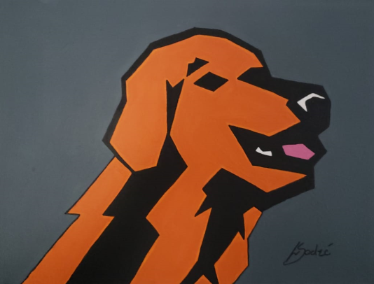
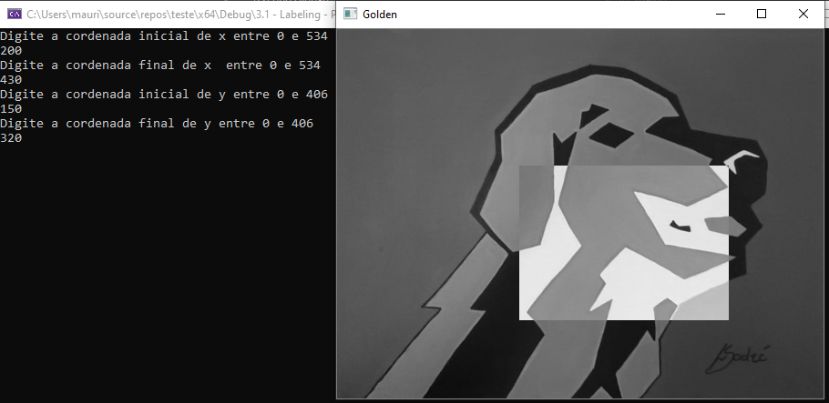

1. Introdução
O intuito deste site é apresentar as soluções dos exercícios propostos na disciplina de Processamento Digital de Imagens (DCA0445), ministrado pelo professor Agostinho Brito.
Todos os exercícios que serão apresentados foram desenvolvidos em C++ e com a biblioteca OpenCV utilizando o sistema operacional Windows 10. Para compilação foi utilizado o arquivo Makefile disponibilizado pelo professor e para a captura de vídeo foi utilizado um celular android com o software Droidcam.
2. Manipulando pixels em uma imagem
Para a realização dos exercícios a seguir foi necessário a utilização do código exemplo pixels.cpp como referência e da figura golden.png para realização dos testes.

Figura 1. Golden.png
2.1. Exercício Regiões
#include <opencv2/opencv.hpp>
#include <iostream>
using namespace cv;
using namespace std;
int main() {
vector<String> endImg;
Point ini, fim;
vector<Point> pontos;
//acessando a imagem original e transformando em preto e branco
glob("golden.png", endImg, false);
Mat imagem = imread(endImg[0], CV_LOAD_IMAGE_GRAYSCALE);
cout << "Digite a cordenada inicial de x entre 0 e " << imagem.size().width << endl;
cin >> ini.x;
cout << "Digite a cordenada final de x entre 0 e " << imagem.size().width << endl;
cin >> fim.x;
cout << "Digite a cordenada inicial de y entre 0 e " << imagem.size().height << endl;
cin >> ini.y;
cout << "Digite a cordenada final de y entre 0 e " << imagem.size().height << endl;
cin >> fim.y;
//criando o quadrado para mostrar o negativo dessa regiao
for (int l = ini.x; l < fim.x; l++) {
for (int c = ini.y; c < fim.y; c++) {
imagem.at<uchar>(c, l) = 255 - imagem.at<uchar>(c, l);
}
}
//mostrando o resultado
imshow("Golden", imagem);
waitKey();
return 0;
}

Figura 2. Golden.png
2.2. Exercício Troca de regiões
#include <iostream>
#include <opencv2/opencv.hpp>
using namespace cv;
using namespace std;
int main(int, char**) {
Mat image, imageaux;
image = imread("golden.png", CV_LOAD_IMAGE_GRAYSCALE);
if (!image.data)
cout << "nao abriu image.png" << endl;
imageaux = imread("golden.png", CV_LOAD_IMAGE_GRAYSCALE);
if (!imageaux.data)
cout << "nao abriu image.png na auxiliar" << endl;
for (int i = 0; i < (image.size().height) / 2; i++) { //2 quad
for (int j = 0; j < (image.size().width) / 2; j++) {
image.at<uchar>(i, j) = imageaux.at<uchar>(i + (image.size().height) / 2, j + (image.size().width) / 2);
}
}
for (int i = (image.size().height) / 2; i < (image.size().height); i++) { //3 quad
for (int j = 0; j < (image.size().width) / 2; j++) {
image.at<uchar>(i, j) = imageaux.at<uchar>(i - (image.size().height) / 2, j + (image.size().width) / 2);
}
}
for (int i = 0; i < (image.size().height) / 2; i++) { //1 quad
for (int j = ((image.size().width) / 2); j < image.size().width; j++) {
image.at<uchar>(i, j) = imageaux.at<uchar>(i + (image.size().height) / 2, j - (image.size().width) / 2);
}
}
for (int i = (image.size().height) / 2; i < (image.size().height); i++) { //4 quad
for (int j = ((image.size().width) / 2); j < image.size().width; j++) {
image.at<uchar>(i, j) = imageaux.at<uchar>(i - (image.size().height) / 2, j - (image.size().width) / 2);
}
}
//namedWindow("janela", WINDOW_AUTOSIZE);
imshow("Original", imageaux);
imshow("golden", image);
waitKey();
return 0;
}
Figura 3. Trocaregioes.cpp
3. Preenchendo regiões

Figura 4. Bolhas.png
3.1. Exercício Labeling
#include <iostream>
#include <opencv2/opencv.hpp>
using namespace cv;
int main(int argc, char** argv){
cv::Mat image, realce;
int width, height;
int nobjects, comBolhas;
cv::Point p;
image = cv::imread(argv[1], cv::IMREAD_GRAYSCALE);
if(!image.data){
std::cout << "imagem nao carregou corretamente\n";
return(-1);
}
width=image.cols;
height=image.rows;
std::cout << width << "x" << height << std::endl;
p.x=0;
p.y=0;
// -------VERIFICAÇÃO DE BORDAS--------
// Horizontais superior e inferior
// Verifica a linha na altura i = 0 e na altura i = height - 1;
for (int i = 0; i < height; i = i + height - 1) {
for (int j = 0; j < width; j++) {
if (image.at<uchar>(i,j) == 255) {
// achou um objeto
p.x = j;
p.y = i;
floodFill(image, p, 0);
}
}
}
// Verticais esquerda e direita
// Verifica a coluna na largura i = 0 e na largura i = width - 1;
for (int i = 0; i < height; i++) {
for (int j = 0; j < width; j = j + width - 1) {
if (image.at<uchar>(i,j) == 255) {
// achou um objeto
p.x = j;
p.y = i;
floodFill(image, p, 0);
}
}
}
// busca objetos presentes
nobjects=0;
for(int i=0; i<height; i++){
for(int j=0; j<width; j++){
if(image.at<uchar>(i,j) == 255){
// achou um objeto
nobjects++;
p.x=j;
p.y=i;
// preenche o objeto com o contador
cv::floodFill(image,p,nobjects);
}
}
}
comBolhas=0;
p.x = 0;
p.y = 0;
floodFill(image, p, 255);
for(int i=1; i<height; i++){
for(int j=1; j<width; j++){
if(image.at<uchar>(i-1, j) > 0
&& image.at<uchar>(i-1,j) < 255
&& image.at<uchar>(i,j) == 0){
// achou um objeto
comBolhas++;
p.x=j;
p.y=i;
// preenche o objeto com o contador
cv::floodFill(image,p,255);
}
}
}
std::cout << "a figura tem " << nobjects << " objetos\n";
std::cout << "a figura tem " << comBolhas << " objetos com bolhas internas\n";
cv::imshow("image", image);
cv::imwrite("labeling.png", image);
cv::waitKey();
return 0;
}
Figura 5. Resultado do labeling
4. Manipulação de Histogramas
#include <iostream>
#include <opencv2/opencv.hpp>
int main(int argc, char** argv){
cv::Mat image;
int width, height;
cv::VideoCapture cap;
std::vector<cv::Mat> planes;
cv::Mat histR, histG, histB;
int nbins = 64;
float range[] = {0, 255};
const float *histrange = { range };
bool uniform = true;
bool acummulate = false;
int key;
cap.open(0);
if(!cap.isOpened()){
std::cout << "cameras indisponiveis";
return -1;
}
cap.set(cv::CAP_PROP_FRAME_WIDTH, 640);
cap.set(cv::CAP_PROP_FRAME_HEIGHT, 480);
width = cap.get(cv::CAP_PROP_FRAME_WIDTH);
height = cap.get(cv::CAP_PROP_FRAME_HEIGHT);
std::cout << "largura = " << width << std::endl;
std::cout << "altura = " << height << std::endl;
int histw = nbins, histh = nbins/2;
cv::Mat histImgR(histh, histw, CV_8UC3, cv::Scalar(0,0,0));
cv::Mat histImgG(histh, histw, CV_8UC3, cv::Scalar(0,0,0));
cv::Mat histImgB(histh, histw, CV_8UC3, cv::Scalar(0,0,0));
while(1){
cap >> image;
cv::split (image, planes);
cv::calcHist(&planes[0], 1, 0, cv::Mat(), histB, 1,
&nbins, &histrange,
uniform, acummulate);
cv::calcHist(&planes[1], 1, 0, cv::Mat(), histG, 1,
&nbins, &histrange,
uniform, acummulate);
cv::calcHist(&planes[2], 1, 0, cv::Mat(), histR, 1,
&nbins, &histrange,
uniform, acummulate);
cv::normalize(histR, histR, 0, histImgR.rows, cv::NORM_MINMAX, -1, cv::Mat());
cv::normalize(histG, histG, 0, histImgG.rows, cv::NORM_MINMAX, -1, cv::Mat());
cv::normalize(histB, histB, 0, histImgB.rows, cv::NORM_MINMAX, -1, cv::Mat());
histImgR.setTo(cv::Scalar(0));
histImgG.setTo(cv::Scalar(0));
histImgB.setTo(cv::Scalar(0));
for(int i=0; i<nbins; i++){
cv::line(histImgR,
cv::Point(i, histh),
cv::Point(i, histh-cvRound(histR.at<float>(i))),
cv::Scalar(0, 0, 255), 1, 8, 0);
cv::line(histImgG,
cv::Point(i, histh),
cv::Point(i, histh-cvRound(histG.at<float>(i))),
cv::Scalar(0, 255, 0), 1, 8, 0);
cv::line(histImgB,
cv::Point(i, histh),
cv::Point(i, histh-cvRound(histB.at<float>(i))),
cv::Scalar(255, 0, 0), 1, 8, 0);
}
histImgR.copyTo(image(cv::Rect(0, 0 ,nbins, histh)));
histImgG.copyTo(image(cv::Rect(0, histh ,nbins, histh)));
histImgB.copyTo(image(cv::Rect(0, 2*histh ,nbins, histh)));
cv::imshow("image", image);
key = cv::waitKey(30);
if(key == 27) break;
}
return 0;
}4.1. Exercício Equalizador
#include <iostream>
#include <opencv2/opencv.hpp>
int main(int argc, char** argv){
cv::Mat image, imageCinza,imageCinzaEq, hist;
cv::VideoCapture cap;
int width, height;
int nbins = 64;
float range[] = {0, 255};
const float *histrange = { range };
bool uniform = true;
bool acummulate = false;
int key;
//Escolhe a câmera do celular - DroidCam.
cap.open(0);
//Testa se a câmera esta aberta
if(!cap.isOpened()){
std::cout << "cameras indisponiveis";
return -1;
}
//Define o tamanho da imagem que irá aparecer em tela
cap.set(cv::CAP_PROP_FRAME_WIDTH, 640);
cap.set(cv::CAP_PROP_FRAME_HEIGHT, 480);
width = cap.get(cv::CAP_PROP_FRAME_WIDTH);
height = cap.get(cv::CAP_PROP_FRAME_HEIGHT);
std::cout << "largura = " << width << std::endl;
std::cout << "altura = " << height << std::endl;
//Cria um histograma com um unsigned de tam histh x histw
int histw = nbins, histh = nbins/2;
cv::Mat histImg(histh, histw, CV_8U, cv::Scalar(0));
while(1){
//Captura a imagem e converte para a cor cinza
cap >> image;
cv::cvtColor(image, imageCinza, cv::COLOR_BGR2GRAY);
//Faz uma copia da imagem cinza para a imagem a ser equalizada
imageCinza.copyTo(imageCinzaEq);
//Utiliza a função equalize do openCV para equalizar a imagem
cv::equalizeHist(imageCinzaEq, imageCinzaEq);
//Calculo do histograma
cv::calcHist(&imageCinzaEq, 1, 0, cv::Mat(), hist, 1,
&nbins, &histrange,
uniform, acummulate);
//Normalização do histograma
cv::normalize(hist, hist, 0, histImg.rows, cv::NORM_MINMAX, -1, cv::Mat());
histImg.setTo(cv::Scalar(0));
//Desenha o histograma
for(int i=0; i<nbins; i++){
cv::line(histImg,
cv::Point(i, histh),
cv::Point(i, histh-cvRound(hist.at<float>(i))),
cv::Scalar(255), 1, 8, 0);
}
//A imagem do histograma é copiada para o canto da tela.
histImg.copyTo(imageCinzaEq(cv::Rect(0, 0,nbins, histh)));
//Ao executar o programa, serão exibidas:
// 1 - A imagem que esta sendo capturada pela câmera;
// 2 - A imagem capturada em tons de Cinza;
// 3 - A imagem em tons de cinza equalizada.
cv::imshow("Imagem Normal", image);
cv::imshow("Imagem Cinza", imageCinza);
cv::imshow("Imagem Cinza Equalizada", imageCinzaEq);
key = cv::waitKey(30);
if(key == 27) break;
}
return 0;
}
Figura 6. Conversão da imagem normal para cinza (iluminado)

Figura 7. Equalização da imagem (iluminado)

Figura 8. Conversão da imagem normal para cinza (sem iluminação)

Figura 9. Equalização da imagem (sem iluminação)
4.2. Exercício Detector de movimento
#include <iostream>
#include <opencv2/opencv.hpp>
int main(int argc, char** argv){
cv::Mat image, quadro;
int width, height;
cv::VideoCapture cap;
std::vector<cv::Mat> planes;
cv::Mat histR, histR_passado;
int nbins = 64;
float limite = 0.99;
float range[] = {0, 255};
const float *histrange = { range };
bool uniform = true;
bool acummulate = false;
int key;
cap.open(0);
if(!cap.isOpened()){
std::cout << "cameras indisponiveis";
return -1;
}
cap.set(cv::CAP_PROP_FRAME_WIDTH, 640);
cap.set(cv::CAP_PROP_FRAME_HEIGHT, 480);
width = cap.get(cv::CAP_PROP_FRAME_WIDTH);
height = cap.get(cv::CAP_PROP_FRAME_HEIGHT);
std::cout << "largura = " << width << std::endl;
std::cout << "altura = " << height << std::endl;
int histw = nbins, histh = nbins/2;
cv::Mat histImgR(histh, histw, CV_8UC3, cv::Scalar(0,0,0));
while(1){
cap >> image;
cv::split (image, planes);
cv::calcHist(&planes[2], 1, 0, cv::Mat(), histR, 1,
&nbins, &histrange,
uniform, acummulate);
cv::normalize(histR, histR, 0, histImgR.rows, cv::NORM_MINMAX, -1, cv::Mat());
histImgR.setTo(cv::Scalar(0));
for(int i=0; i<nbins; i++){
cv::line(histImgR,
cv::Point(i, histh),
cv::Point(i, histh-cvRound(histR.at<float>(i))),
cv::Scalar(0, 0, 255), 1, 8, 0);
}
if(!histR_passado.empty()){
float erro = compareHist(histR_passado, histR, cv::HISTCMP_CORREL);
std::cout << erro << std::endl;
if(erro < limite){
std::cout << "ALERTA DE MOVIMENTO!" << std::endl;
}
}
histImgR.copyTo(image(cv::Rect(0, 0, nbins, histh)));
histR.copyTo(histR_passado);
cv::imshow("image", image);
key = cv::waitKey(30);
if(key == 27) break;
}
return 0;
}Detector de movimentos
5. Filtragem no domínio espacial I
5.1. Exercício do filtro Laplaciano com Gauss
#include <iostream>
#include <opencv2/opencv.hpp>
void printmask(cv::Mat &m) {
for (int i = 0; i < m.size().height; i++) {
for (int j = 0; j < m.size().width; j++) {
std::cout << m.at<float>(i, j) << ",";
}
std::cout << "\n";
}
}
void opcao()
{
std::cout << "\nSelecione o filtro: \n"
"a - Modulo\n"
"m - Media\n"
"h - Horizontal\n"
"v - Vertical\n"
"g - Gauss\n"
"l - Laplaciano\n"
"x - Laplaciano do Gaussiano\n"
"esc - sair\n";
}
int main(int, char **) {
cv::VideoCapture cap; // open the default camera
float media[] = {0.1111, 0.1111, 0.1111, 0.1111, 0.1111,
0.1111, 0.1111, 0.1111, 0.1111};
float gauss[] = {0.0625, 0.125, 0.0625, 0.125, 0.25,
0.125, 0.0625, 0.125, 0.0625};
float horizontal[] = {-1, 0, 1, -2, 0, 2, -1, 0, 1};
float vertical[] = {-1, -2, -1, 0, 0, 0, 1, 2, 1};
float laplacian[] = {0, -1, 0, -1, 4, -1, 0, -1, 0};
float boost[] = {0, -1, 0, -1, 5.2, -1, 0, -1, 0};
cv::Mat frame, framegray, frame32f, frameFiltered;
cv::Mat mask(3, 3, CV_32F), mask1, mask2;
cv::Mat result;
double width, height;
int absolut;
char key;
bool juntarFiltros = false;
cap.open(0);
if (!cap.isOpened()) // check if we succeeded
return -1;
cap.set(cv::CAP_PROP_FRAME_WIDTH, 640);
cap.set(cv::CAP_PROP_FRAME_HEIGHT, 480);
width = cap.get(cv::CAP_PROP_FRAME_WIDTH);
height = cap.get(cv::CAP_PROP_FRAME_HEIGHT);
std::cout << "largura=" << width << "\n";
;
std::cout << "altura =" << height << "\n";
;
std::cout << "fps =" << cap.get(cv::CAP_PROP_FPS) << "\n";
std::cout << "format =" << cap.get(cv::CAP_PROP_FORMAT) << "\n";
cv::namedWindow("filtroespacial", cv::WINDOW_NORMAL);
cv::namedWindow("original", cv::WINDOW_NORMAL);
mask = cv::Mat(3, 3, CV_32F, media);
mask1 = cv::Mat(3, 3, CV_32F, laplacian);
mask2 = cv::Mat(3, 3, CV_32F, gauss);
absolut = 1; // calcs abs of the image
opcao();
for (;;) {
cap >> frame; // get a new frame from camera
cv::cvtColor(frame, framegray, cv::COLOR_BGR2GRAY);
cv::flip(framegray, framegray, 1);
cv::imshow("original", framegray);
framegray.convertTo(frame32f, CV_32F);
if(juntarFiltros == true){
//Recebe o filtro gaussiano e logo apos recebe o filtro
//laplaciano
cv::filter2D(frame32f, frameFiltered, frame32f.depth(),
mask2, cv::Point(1, 1), 0);
cv::filter2D(frameFiltered, frameFiltered, frame32f.depth(),
mask1, cv::Point(1, 1), 0);
}else{
cv::filter2D(frame32f, frameFiltered, frame32f.depth(),
mask, cv::Point(1, 1), 0);
}
if (absolut) {
frameFiltered = cv::abs(frameFiltered);
}
frameFiltered.convertTo(result, CV_8U);
cv::imshow("filtroespacial", result);
key = (char)cv::waitKey(10);
if (key == 27) break; // esc pressed!
switch (key) {
case 'a':
juntarFiltros = false;
absolut = !absolut;
break;
case 'm':
juntarFiltros = false;
mask = cv::Mat(3, 3, CV_32F, media);
printmask(mask);
break;
case 'g':
juntarFiltros = false;
mask = cv::Mat(3, 3, CV_32F, gauss);
printmask(mask);
break;
case 'h':
juntarFiltros = false;
mask = cv::Mat(3, 3, CV_32F, horizontal);
printmask(mask);
break;
case 'v':
juntarFiltros = false;
mask = cv::Mat(3, 3, CV_32F, vertical);
printmask(mask);
break;
case 'l':
juntarFiltros = false;
mask = cv::Mat(3, 3, CV_32F, laplacian);
printmask(mask);
break;
case 'b':
juntarFiltros = false;
mask = cv::Mat(3, 3, CV_32F, boost);
break;
case 'x':
//Ativa a flag para juntar os filtros laplaciano e gaussiano.
juntarFiltros = true;
printmask(mask1);
break;
default:
break;
}
}
return 0;
}6. Filtragem no domínio espacial II
6.1. Exercício Tilt-shift (Imagem)
6.2. Exercício Tilt-shift(Vídeo)
7. Filtragem no domínio da frequência
7.1. Exercício Filtro Homomórfico
#include <iostream>
#include <cmath>
#include <opencv2/opencv.hpp>
#include <opencv2/core.hpp>
#include <opencv2/imgproc/imgproc.hpp>
#define gH 2
#define gL 0.5
#define c 0.45
#define d0 8
using namespace cv;
using namespace std;
// troca os quadrantes da imagem da DFT
void trocaQuadrantes(Mat& image ){
cv::Mat tmp, A, B, C, D;
// se a imagem tiver tamanho impar, recorta a regiao para o maior
// tamanho par possivel (-2 = 1111...1110)
image = image(cv::Rect(0, 0, image.cols & -2, image.rows & -2));
int centerX = image.cols / 2;
int centerY = image.rows / 2;
// rearranja os quadrantes da transformada de Fourier de forma que
// a origem fique no centro da imagem
// A B -> D C
// C D B A
A = image(cv::Rect(0, 0, centerX, centerY));
B = image(cv::Rect(centerX, 0, centerX, centerY));
C = image(cv::Rect(0, centerY, centerX, centerY));
D = image(cv::Rect(centerX, centerY, centerX, centerY));
// swap quadrants (Top-Left with Bottom-Right)
A.copyTo(tmp);
D.copyTo(A);
tmp.copyTo(D);
// swap quadrant (Top-Right with Bottom-Left)
C.copyTo(tmp);
B.copyTo(C);
tmp.copyTo(B);
}
int main(int argc, char** argv){
Mat imaginaryInput, complexImage;
Mat padded, filter, filter_print;
Mat image, tmp;
Mat_<float> zeros;
vector<Mat> planos, filtros, dfts;
int dft_M, dft_N;
image = imread(argv[1], IMREAD_GRAYSCALE);
imshow("Imagem Inicial", image);
// identifica os tamanhos otimos para
// calculo do FFT
dft_M = getOptimalDFTSize(image.rows);
dft_N = getOptimalDFTSize(image.cols);
// realiza o padding da imagem
copyMakeBorder(image, padded, 0,
dft_M - image.rows, 0,
dft_N - image.cols,
BORDER_CONSTANT, Scalar::all(0));
// prepara a matriz complexa e preenche com 0
imaginaryInput = Mat(padded.size(), CV_32FC1, Scalar(0));
//Trasforma padded em float
padded.convertTo(padded, CV_32F);
normalize(padded, padded, 0.0, 1.0, NORM_MINMAX);
//Soma ambas as componentes com 1 para evitar a operação ln(0)
cv::log(padded + 1, padded);
cv::log(imaginaryInput + 1, imaginaryInput);
//Concatena plano real e imaginário para realizar a DFT
planos.push_back(padded);
planos.push_back(imaginaryInput);
merge(planos, complexImage);
// Construindo a função de transferência (filtro frequencial) com o
// mesmo tamanho e tipo da matriz complexa
filter = Mat((dft_M & -2), (dft_N & -2), CV_32FC2, Scalar(0, 0));
// Preenche o filtro homomórfico com os valores dadod pela função
for(int i=0; i< dft_M; i++){
for(int j=0; j < dft_N; j++){
float h = (float) (gH - gL)*(1.0 - exp(-c*(pow(abs(i-dft_M/2)+abs(j-dft_N/2), 2)/pow(d0, 2)))) + gL;
filter.at<Vec2f>(i, j)[0] = h;
filter.at<Vec2f>(i, j)[1] = h;
}
}
split(filter, filtros);
normalize(filtros[0], filter_print, 0.0, 1.0, NORM_MINMAX);
imshow("filtro", filter_print);
// Efetua a filtragem
dft(complexImage, complexImage);
trocaQuadrantes(complexImage);
mulSpectrums(complexImage,filter,complexImage,0);
trocaQuadrantes(complexImage);
idft(complexImage, complexImage, DFT_SCALE);
cv::exp(complexImage,complexImage);
planos.clear();
split(complexImage, planos);
// normaliza a parte real para exibicao
normalize(planos[0], tmp, 0.0, 1.0, NORM_MINMAX);
imshow("Imagem Final", tmp);
waitKey();
return 0;
}
Figura 10. Resultado.
8. Quantização vetorial com k-means
8.1. Exercício Kmeans
#include <opencv2/opencv.hpp>
#include <cstdlib>
#include <vector>
#include <iostream>
using namespace std;
using namespace cv;
int main( int argc, char** argv ){
int nClusters = 8, nRodadas = 1;
cv::Mat rotulos, centros;
if (argc != 3) {
std::cout << "kmeans entrada.jpg saida.jpg\n";
exit(0);
}
cv::Mat img = cv::imread(argv[1], cv::IMREAD_COLOR);
cv::Mat samples(img.rows * img.cols, 3, CV_32F);
for (int y = 0; y < img.rows; y++) {
for (int x = 0; x < img.cols; x++) {
for (int z = 0; z < 3; z++) {
samples.at<float>(y + x * img.rows, z) = img.at<cv::Vec3b>(y, x)[z];
}
}
}
//Executa o kmeans nExecucoes vezes, inserindo-os no vetor rotulada
vector<Mat> rotulada(10, Mat(img.size(), img.type()) );
for(int i = 0; i<10; i++){
kmeans(samples,
nClusters,
rotulos,
TermCriteria(TermCriteria::EPS|TermCriteria::COUNT, 10000, 0.0001),
nRodadas,
KMEANS_RANDOM_CENTERS,
centros );
for( int y = 0; y < img.rows; y++ ){
for( int x = 0; x < img.cols; x++ ){
int indice = rotulos.at<int>(y + x*img.rows,0);
rotulada.at(i).at<Vec3b>(y,x)[0] = (uchar) centros.at<float>(indice, 0);
rotulada.at(i).at<Vec3b>(y,x)[1] = (uchar) centros.at<float>(indice, 1);
rotulada.at(i).at<Vec3b>(y,x)[2] = (uchar) centros.at<float>(indice, 2);
}
}
imshow( "Imagem Final", rotulada.at(i) );
waitKey();
}
}
Figura 11. Imagem 1

Figura 12. Imagem 2

Figura 13. Imagem 3

Figura 14. Imagem 4

Figura 15. Imagem 5

Figura 16. Imagem 6

Figura 17. Imagem 7

Figura 18. Imagem 8

Figura 19. Imagem 9

Figura 20. Imagem 10